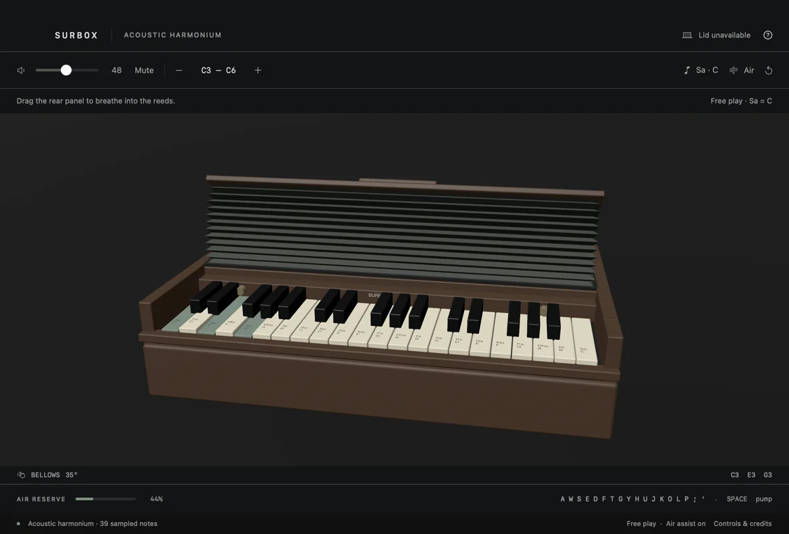

Give it breath
Drag the hinged bellows to charge an air reserve. Opening and closing feed the reeds; adjustable air assist makes it easy to begin.
An instrument for your Mac
Play an Indian harmonium with tactile keys, folding bellows and acoustic reed recordings. Built natively for macOS. Yours to play offline.
macOS 14+ · Native desktop app · Local engineering preview

Drag the hinged bellows to charge an air reserve. Opening and closing feed the reeds; adjustable air assist makes it easy to begin.
Play chords with your computer keyboard, glide over 37 on-screen keys, choose a tonic, and add Sa or Pa drones.
39 notes derived from Donya Quick’s CC0 acoustic harmonium recording. Local playback, smooth loops and a clearly labeled fallback.
Before you download
Only if your Mac exposes a compatible continuous lid-angle sensor. SurBox checks the hardware and shows the actual status. The 2020 M1 MacBook Air does not expose that sensor; its open/closed switch cannot measure flapping. Mouse and Space-key pumping still work.
Lid integration has been tested with injected readings. Actual hand-moved tracking on a compatible Mac remains unverified. Move any supported screen gently; never force the hinge. Normal lid-close sleep stays enabled.
The download is for Apple Silicon running macOS 14 or later, built and launched on macOS 15.5. Intel users must build from source; Intel and macOS 14 hardware testing remain outstanding. No account, internet connection, microphone access or paid API is required to play.
This is a locally ad-hoc-signed engineering preview, not a Developer ID-signed or notarized release. A downloaded copy may be blocked by Gatekeeper. Review the source and release details first; use Apple’s normal approval flow only if you trust the download. Do not disable system security globally.
Unzip and open SurBox, then click the instrument. Use A W S E D F T G Y H U J K O L P ; ' for chromatic notes, hold Space to pump, and press Escape to release all notes. Mouse dragging controls the bellows or glides across keys. Air assist is on by default.
The current build passed 16 deterministic groups and 53 primary native checks, including audio output, keyboard interaction and lid-input integration with injected data. Human listening, physical sensor behavior, VoiceOver, device hot-plug and wider hardware acceptance remain open.
No accounts. No cloud audio. Just your Mac.
Release notes · Download checksums